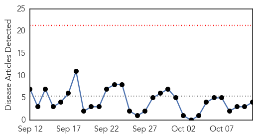
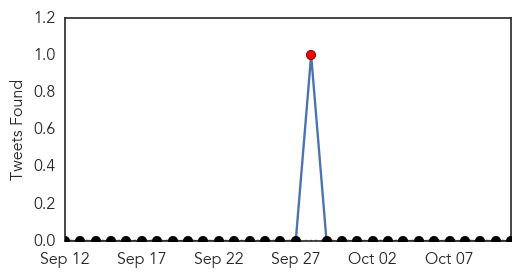
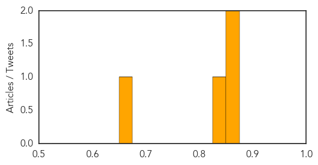

Influenza
30-Day Web Trend
5 alerts, 4 warnings

30-Day Twitter Trend
0 alerts, 0 warnings

Article Locations

Article Confidences

Top Articles:
- 0.998
- Health commissioner urges Indiana residents to get flu shots
- 0.976
- Don't give flu shot a miss
- 0.829
- Higher dose flu shot decreases hospitalization of older nursing home residents
- 0.764
- Want a band-aid with that? Flu shot drive-through lanes brace Bay Area residents for winter
- 0.720
- Where the leaders are for Oct. 12
- 0.624
- Health metrics that matter
Top Tweets:
-
No tweets found for Oct 11, 2015
Meningitis
30-Day Web Trend
0 alerts, 0 warnings

30-Day Twitter Trend
1 alerts, 0 warnings

Article Locations
Article Confidences
Top Articles:
- 0.870
- Students confused about who should get new meningitis vaccine, senior doctor warns
- 0.869
- Cumberland student ill with viral meningitis — Health — Bangor Daily News — BDN Maine
- 0.833
- Meningitis vaccine: Can I get it? Everything you need to know about the new jab
- 0.653
- Massive Whole Foods cheese recall after Listeria outbreak
Top Tweets:
-
No tweets found for Oct 11, 2015